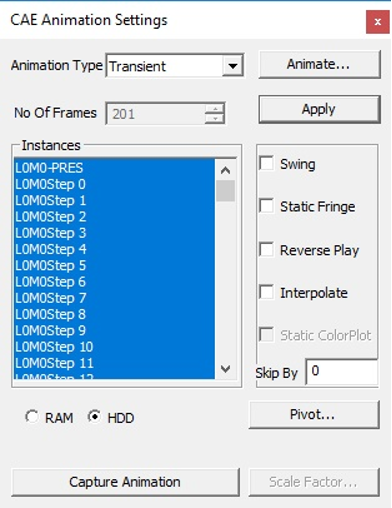
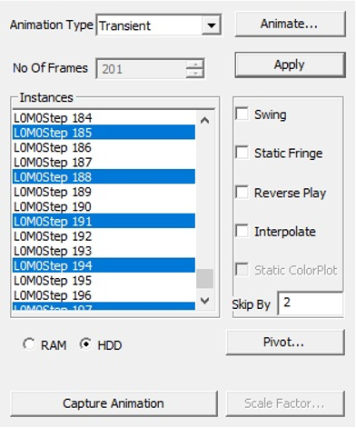
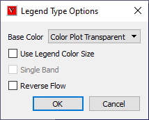

Animation Settings
VCollab Pro users can define and set animation properties using Animation settings found under CAE menu.
Animation Settings Panel
Click CAE | Animation Settings or click Settings button in the CAE Animate panel
The various fields and controls available under Animation settings are explained below.
Animation Type* Choose an animation type. No. Of Frames Specify the number of frames per second. Number of frames cannot be modified in transient animation when the Interpolate option is turned Off. Swing Apply Swing motion to Animation. Static Fringe Apply Static Fringe to transient animation. Reverse Play Play animation in backward motion. Instances Select the instances. Animate Opens the Animation Dialog and starts animation. Apply Apply the settings to animation. Interpolate Allows to interpolate time and animate. This option is enabled for transient animation type. It is unchecked by default. Users can edit the number of frames only when the Interpolate option is checked. Interpolate does not work for moving-mesh models Static Color Plot Animate without changing the model contour. Skip By Skip the number of frames/instances while selecting instances. RAM/HDD RAM/HDD is used to optimize memory using either RAM or Hard Disk. Pivot... Users can pick a node or triangle (plane) and simulate deformation relative to this pivot point or plane. Capture Animation Capture one cycle of animation and export into a movie file. Scale Factor Link to deformation scale factor settings.
Types of Animations
- Linear Animation: Number of frames provided by the user are interpolated linearly between original mesh to deformed mesh.
- Transient Animation: This is to animate the model with different time steps or frequency or instances. Each frame refers to one time step or load case or mode case or frequency. Rigid body animation is a special case in transient animation. Interfaces for Rigid body animation will be visible for the relevant data.
- Eigenvector Animation: Animating eigenvector results (complex eigen as well as mode case data).
- Legend Animation: Animating contour color based on legend palette using transparency.
Transient Animation Context Menu
After selecting the Transient animation type, right click in the panel to open the context menu as shown below.
The various options available for Transient animation are explained below.
| Prepare Animation | Prepares geometry and textures for required instances. It may take more time but animation will be faster. |
|---|---|
| Clear Preparation | Clears animation data and prepares with current CAE data again. |
| Load All Instances | Loads all instances from CAX file to RAM for faster animation. |
| Unload All Instances | Unloads all instances results from RAM if not required. |
CAE Animation Options
CAE Animation is computing and simulating CAE data with a finite number of frames.
For example, Let CAE data have 4 frames for animation. In animation this data will display frames 1, 2, 3, 4 starting frame 1 and ending with frame 4.
Swing Motion : Animation starts and ends with the initial frame. Frames will thus be displayed in the order of 1,2,3 , 4 ,3,2,1 .
Reverse Play : Reverses the animation order and displays the frames in the order of 4,3,2,1
Capture Animation: Saves one complete cycle of animation into either into a movie or a set of image formats as specified by the user.
Scale Factor : Opens the CAE Deformation Scale factor settings dialog where the user can change scale factor for better visualization.
Type of Animation Swing Static Fringe Reverse Play Interpolate Static Color Plot RAM/HDD Skip by Pivot Linear Y Y N N N N N Y Transient Y Y Y Y Y Y Y Y EigenVector Y Y Y Y Y Y Y Y Note
Y: Yes - Option is applicable and enabled.
N: No - Option is not applicable and disabled
Animation Type and Static Fringe Description
Animation Type Static Fringe ON Static Fringe OFF Linear Legend Fixed Fixed Contour Fixed
(Current Result color for all frames)
Varying
(0 to Nodal Value)
Transient Legend Fixed
(Min/Max across all frames)
Varying
(Min/Max Current frame)
Contour Varying Varying EigenVector
(Simple Modal)Legend Fixed Fixed
(Envelope of all angle frames)
Contour Fixed
(Current result color for all frames)
Varying
(Based on frame angle (0 to 360))
EigenVector
(Complex Modal)Legend Fixed
(min/max across all frames)
Fixed
(min/max across all frames)
Contour Fixed
(max value across all frames)
Varying
(Based on frame angle (0 to 360))
Note:
If the current contour result is non-complex, static fringe will be disabled.
- Legend -
- Fixed (based on current results)
- Contour -
- Fixed (based on current results)
- Deformation-
- Based on frame angle and current
Multi Model CAE Animation and its Attributes
Animation settings for each CAE model is influenced by CAE Legend palette type.
| Legend Palette type | Frames Display | Frames Selection |
| Multiple | Lists all instances /frames of the current model. | Selected frames are applied to current model only |
| Combined | Lists common instances/frames across models. | Selected frames will be applied to all models |
| Multiple: Common Legend | Lists all instances / frames of the current model. | Selected frames are applied to current model only |
Animation Settings and Merged Models
Property Animation type Combined Multiple Multiple: Common Legend Animation Type Same type is applied across all models Reverse Play All types Applied across all models Swing Linear /Transient Applied across all models Static Fringe All types Applied across all models RAM/HDD Transient Applied across all models Interpolate Transient Applied across all models Static Color Plot Transient Applied to the current model only. Users can set this flag to each individual model using the result list dialog. Pivot Linear /Transient Applied to the current model only. Users can set this flag to each individual model using the result list dialog. Deformation Scale Factor All types Applied to current model All models Applied to current model only Instance / Frame Selection Linear /Eigen Lists all frames of the current model. Single selection for each model can be done. Default selection is the frame which is selected in the is selected dialog. Lists common insta nces/frames of all models and apply the selection to all models. If there is no common frame, the first frame of each model is applied and animated. Lists all frames of the current model. Single selection for each model can be done. Default selection is the frame which is selected in the result list dialog. Transient Lists all frames of current mode l.Selection should be done for each model and applied. All frames are selected by default for each model. Lists common insta nces/frames of all models and apply the selection to all models. If there is no common frame, the animation type will be changed to 'Linear' au tomatically and starts animation. Lists all frames of current mode l.Selection should be done for each model and applied. All frames are selected by default for each model. Number of Frames Linear /Eigen Same number of frames are used across all models. Same number of frames are used across all models. Same number of frames are used across all models. Transient Same number of frames are used across all models. Maximum time range is considered across all models. Same number of frames is used across all models Same number of frames are used across all models. Maximum time range is considered across all models. Frame Rate All types Same frame rate for all models.
Steps to activate Linear Animation
- Click CAE | Animation Settings.
- Select Animation Type as Linear.
- Enter a number of frames.
- Click Harmonic and Swing motions if necessary.
- Click Apply and Animate.
Steps to activate Transient Animation
- Click CAE | Animation Settings.
- Select Animation Type as Transient. All instances are selected by default.
- Select Number of instances if necessary.
- Select Swing motion if necessary.
- Select Static Fringe if necessary.
- Click Apply and Animate.
Steps to activate Mode Case animation or Eigen Vector Animation
- Click CAE | Animation Settings
- For mode case and complex eigen data, default animation will be Eigen Vector animation.
- If not, select the EigenVector option.
- Click Apply and Animate.
Improve performance during transient animation
Select frame data source option (RAM/HDD) based on the CAX data size to improve the animation speed.

Steps to animate CAE results
- Click CAE | Animation Settings
- Select Animation Type as Results. All results are selected by default.
- Select the results required for animation.
- Select Swing motion if needed.
- Click Apply and Animate.
Steps to capture CAE Animation into a movie
- Click CAE | Animation Settings
- Click Capture Animation to open up the Capture CAE Animation dialog box.
- Click file browser button next to the Output File field
- Select any Save as type from the list of .mp4, .flv, .wmv, .gif, .avi, .jpg, .bmp, .tif, and .png.
- Click Capture.
- Wait for a confirmation message.
- Click OK to complete the process.
Note: If output file type is of image, all frames will be saved as image files.
Advantage of 'Skip By' option
If the CAE animation cycle contains a large number of frames, the time taken for a cycle will be very long. Skip By helps users to reduce the cycle time, and yet view a better and complete simulation by skipping odd frames or two or more frames.
Consider the following image, which contains 201 frames. The animation cycle will take more than one minute, if the time interval between frames is 0.5 seconds. By skipping alternative frames. The number of frames can be reduced to 101.


It can further be reduced to 67 frames by skipping two frames as shown below.

Animation Relative to Reference Entity
VCollab Pro provides pivot simulation relative to Node and Plane.
Pivot Node arrests translation for picked nodes and simulates relative to the pivot node.
Pivot Plane arrests translation of pivot node and rotation of picked triangle (polygon) and simulates.
Open CAE Animation Settings dialog box
Click Pivot.... to open Pivot Settings dialog box
Select Node or Plane in the Pivot combo box.
Click 'Pick' to select the node in the model. To select the node, click a node on the model.
Node number is displayed in the ID text. Picked ID will be considered as Pivot point.
If the pivot option is Node, then the nearest node will be highlighted.
If the pivot option is Plane, then the picked triangle will be highlighted.
The deformation at the pivot point is fixed.
Now animate the model and notice how the simulation changes relative to pivot point.
Pivot Node Pivot Plane Picked Node deformation is fixed Picked Node deformation is fixed No rotation is arrested. Picked triangle rotation is arrested.
Pivot edge (Line joining pivot node and next node in triangle) rotation is arrested.
Example:
Below Image shows where the pivot plane is picked.
Animation with and without pivot data is shown below
Animation without Pivot
Animation with Pivot Node
Animation with Pivot Plane


Interpolate option in Transient Animation
Interpolate option is enabled only for transient animation type. It is turned OFF by default.
When turned Off, transient animation simulates actual time step frames in a loop and users cannot modify the number of frames. For example, the airbag.cax model has 18 instances of displacement result. VCollab simulates these 18 instance frames consecutively in a loop.
When the Interpolate option is turned ON, VCollab allows users to edit the number of VCollab interpolates available and selected frames time data to find a new set of frames.
Interpolate helps users to customize the simulation for smoothness and better time step simulation.
The following graph depicts Transient animation with interpolation.

Rigid Body Animation
This is a special case of transient animation type. If loaded cax contains rigid body transformations, then relavant interfaces will appear. User have 3 options to animate, - Rigid & Flex Rigid body transformation with Flexi deformation result. - Rigid only Applies rigid body transformation only. - Flex only Applies flex deformation results only.
Track Part
This feature allows the user to pick a part and follow it through the animation. - Click Track button - It pops up Track Part dialog - Enter the part name or click Pick button. - Click on the required part in the viewer. - Click OK - Click Apply and Animate.
Legend Animation
Legend Animation is, simulating contour colors with tranparency or from base color frame by frame. For example, in case of flow lines applying colors step by step gives us better understanding on how the fluid flows. VCollab provides different options to visualize this animation. First frame contains model with base color.
Legend Animation Panel

| Base Color | Model will be in base color in the first frame. There are three options. Color Plot with transparent, No Result and No Result with transparent. |
| Use Legend Color Size | each frame one color from legend will be fille. Number of animation frames will be equal to number colors in legend. |
| Single Band | One color will be visible in one frame of animation. Other zones will be in base color. |
| Reverse Flow | Reverses the animation. |
Different possible combinations of Legend Animation options.
Use Legend Color Size
Color Plot Transparent

No Result

No Result Transparent

Single Band
Color Plot Transparent

No Result

No Result Transparent
Reverse Flow
Color Plot Transparent

No Result
No Result Transparent